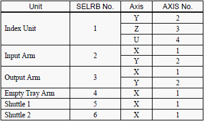
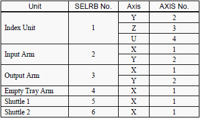

|
Dip switch to initialise encoder
|
Robot Number and Axis Number  |
Service History
Subject: Condition of returned NS-7000 (S/N: 18732 ) from SDT
Handler Model: NS-7000 (S/N: 18732)
Controller: RC520
Date:27 Feb 2008
Symptom
1. Power on handler. Unable to power on from panel, found out emergency connector behind DU1 not connected.
Connected back, power on ->OK
2. DU1 status 1 LED light up.
From SPEL, robot 1 status " ???", reset encoder bit 1,3 and 4.
DU1 status no more error light.
Restart SPEL, robot 1 status motor off ->OK
3. Perform calibration for index arm Y, Z and U axis.
|
Dip switch to initialise encoder
|
Robot Number and Axis Number  |
4. Perform dry running.
Observed Hand C of Input Arm motion abnormal.
Removed input arm side covers and found out hand c vacuum line caught in actuator shaft.
Adjusted vacuum line and perform Hand height calibration.
Resume dry running 80% speed -> OK
5. Index Arm Y,Z and U motions OK.
Require to teach index arm reference height and P50 and P51 position.
Due to unavailable 80x60 socket layout kit and Quad changekit, above mentioned items unable to complete.
Action
Cause
Remarks
The DIP switch to initialise encoder is on the Signal Relay Board (SKP392) in it's respective Drive Unit (DU).